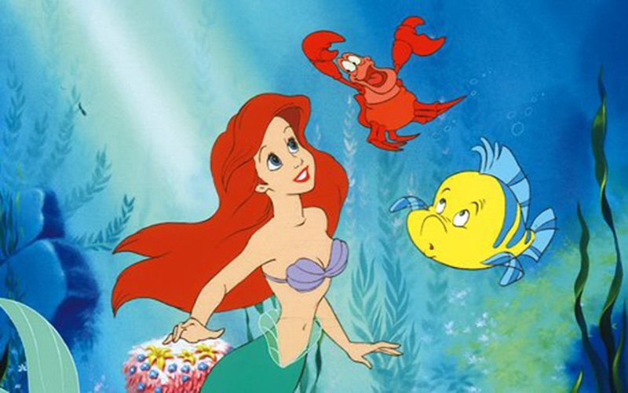

About Ariel
Ariel is a mermaid. She's fallen in love with Prince Eric, who is a human. Her dad, King Triton forbids her to go to the land to see Eric again. Therefore, Ariel seeks help from a sea witch, Ursula. She becomes a human for three days and has to make Prince Eric to fall in love with her.
Ariel, Flounder and Sebastian
Ariel's Characteristics
- She has a sweet voice
- She is very adventurous
- She's 16
Ariel's Friends
Ariel has 2 friends, who are Flounder and Sebastian. Click on the links below to read more about them: